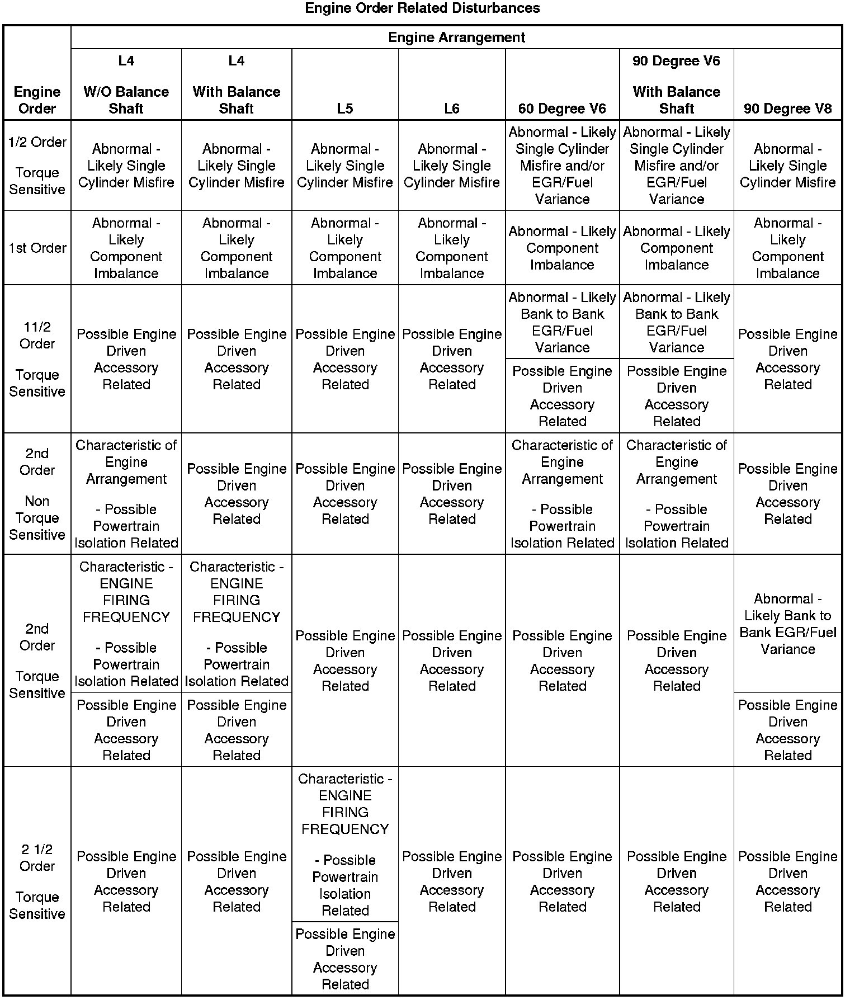
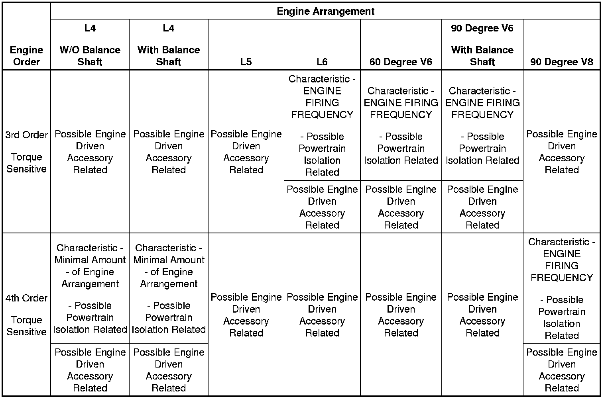

Engine Order Classification
Engine Order Classification
Engine First Order Classification
1. Convert the engine speed in revolutions per minute (RPM), recorded during duplication of the disturbance into Hertz , revolutions per second (RPS), by dividing the RPM by 60 seconds. Refer to the following example:
1,200 RPM divided by 60 = 20 Hz (or RPS)
2. Compare the dominant frequency in Hz, recorded during duplication of the disturbance with the engine speed just converted into Hz, to determine if they are related.
3. If the dominant frequency in Hz, recorded during duplication of the disturbance and the engine speed, converted into Hz, ARE related, then an engine FIRST ORDER related disturbance is present. Engine first order disturbances are usually related to an imbalanced component. Refer to the Engine Order Related Disturbances table.
4. If the dominant frequency in Hz, recorded during duplication of the disturbance and the engine speed, converted into Hz, are NOT related, then determine if the disturbance is related to the engine's firing frequency. Proceed to Engine Firing Frequency Classification.
Engine Firing Frequency Classification
Engine firing frequency is a term used to describe the number of firing pulses (one firing pulse = one cylinder firing) that occur during ONE complete revolution of the crankshaft, multiplied by the number of crankshaft revolutions per second, Hz.
1. Calculate the engine firing frequency.
* To determine the firing frequency of a 4-stroke engine during ONE complete revolution of the crankshaft, multiply the engine speed, converted into Hz, by HALF of the total number of cylinders in the engine.
* For example: The engine speed, converted into Hz, was 20 Hz; if the vehicle was equipped with a V8 engine, 4 of the 8 cylinders would actually fire during ONE complete revolution of the crankshaft.
- Multiply the converted engine speed (20 Hz) by 4 cylinders firing.
20 Hz X 4 = 80 Hz
- The engine firing frequency for a V8 engine at the original engine speed of 1,200 RPM, recorded during duplication of the disturbance, would be 80 Hz.
- In like manner, a 6-cylinder engine would have a firing frequency of 60 Hz at the same engine speed of 1,200 RPM.
20 Hz X 3 = 60 Hz
2. Compare the dominant frequency in Hz, recorded during duplication of the disturbance with the engine firing frequency in Hz, just calculated, to determine if they are related.
3. If the dominant frequency in Hz, recorded during duplication of the disturbance and the engine firing frequency in Hz, just calculated ARE related, then an engine FIRING FREQUENCY related disturbance is present. Engine firing frequency disturbances are usually related to improper isolation of a component. Refer to the Engine Order Related Disturbances table.
4. If the dominant frequency in Hz, recorded during duplication of the disturbance and the engine firing frequency in Hz, just calculated are NOT related, then determine if the disturbance is related to another engine order classification. Proceed to Other Engine Order Classification.
Other Engine Order Classification
1. Multiply the engine speed, converted into Hz, recorded during duplication of the disturbance by different possible order-numbers, other than 1 (first order) or the number used to determine the firing frequency of the engine.
2. Compare the dominant frequency in Hz, recorded during duplication of the disturbance with the other possible engine orders just calculated, to determine if they are related.
3. If the dominant frequency in Hz, recorded during duplication of the disturbance and one of the other engine order frequencies in Hz, just calculated ARE related, then an engine related disturbance of that order is present. If an engine related disturbance is present that is NOT related to first order or firing frequency, then it could be related to an engine driven accessory system. Proceed to Engine Driven Accessories Related to Engine Order.
Engine Driven Accessories Related to Engine Order
Engine driven accessory systems can be related to specific engine orders depending upon the relationship of the accessory pulley diameter to the crankshaft pulley diameter. For example:
* If the crankshaft pulley measured 20 cm (8 in) in diameter and one of the engine driven accessory pulleys measured 10 cm (4 in) in diameter, then that accessory pulley would rotate 2 times for every one rotation of the crankshaft pulley. If that accessory system was not isolated properly, or was not operating properly, it would be identifiable as a 2nd order engine related disturbance.
* In like manner, if an engine driven accessory pulley measured 5 cm (2 in) in diameter, then that accessory pulley would rotate 4 times for every one rotation of the crankshaft pulley. If that accessory system was not isolated properly, or was not operating properly, it would be identifiable as a 4th order engine related disturbance.
Engine driven accessories that contribute to, are excited by, or are the sole cause of a disturbance are usually doing so because of improper isolation that causes a transfer path into the passenger compartment or to another major component of the vehicle body.
Using the J 38792-VS , Vibrate Software, accurately measuring the diameters of the accessory pulleys and the crankshaft pulley, and performing the appropriate diagnostic procedures completely will lead to the specific accessory system which is either contributing to, or causing the customer's concern.

